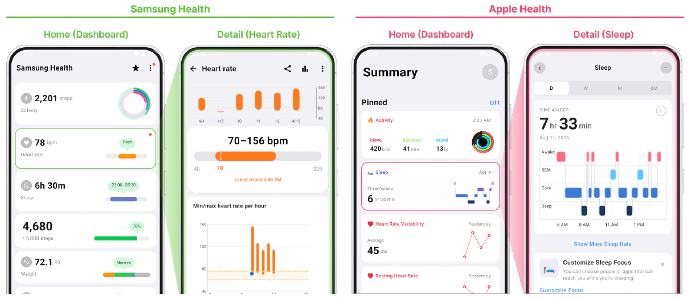

SalusChart: A Data Visualization Library for Mobile Health Apps
An Android visualization library for mobile health apps, built with Kotlin and Jetpack Compose. I contributed chart components and configuration options for both novice and experienced developers.